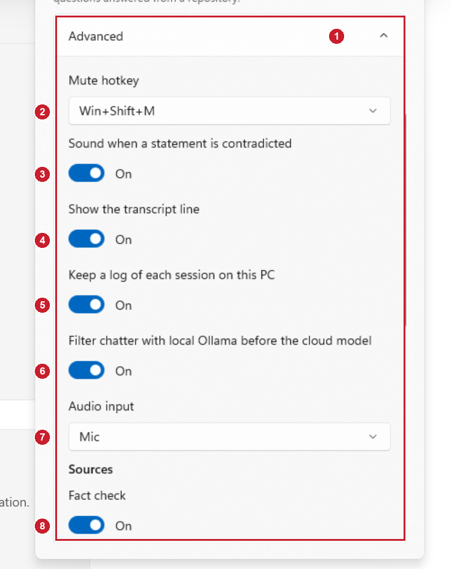
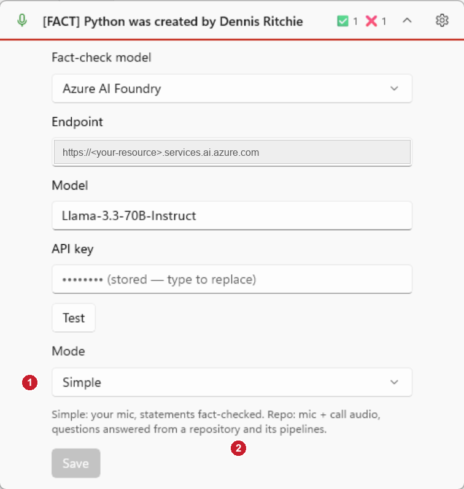

Settings without the Advanced section
The Advanced section is removed. What its switches were set to in the "before" picture is now simply how the app behaves. "Before" is the picture you sent; "after" is a Debug build showing the settings with sample data.
Before

- The Advanced section (outlined), a long scrolling list.
- Mute hotkey: Win+Shift+M.
- Sound when a statement is contradicted: on.
- Show the transcript line: on.
- Keep a log of each session on this PC: on.
- Filter chatter with local Ollama before the cloud model: on.
- Audio input: Mic.
- Source switches (Fact check on, and the repo sources below it).
After

- Mode is the last choice. It decides the audio input and the sources, as it already did: Simple is mic + fact check, Repo is mic + call audio + the repo sources. Choosing Repo also shows the repository and the three Azure DevOps fields here.
- Nothing else to set. Items 2 to 6 on the left are now fixed: Win+Shift+M (with the same fallbacks if it is taken), the tone, the transcript line, the session log and the Ollama filter are always on.
The endpoint is blanked in the picture because it names a private Azure resource.